Carrinhos da Cidade Grande
O dono escolheu a versão "com carinha". Aqui está a família inteira nesse jeito: táxi, carro de polícia de brinquedo, carro comum em quatro cores, dois ônibus e o carrinho de sorvete, fotografados no motor do jogo na rua da cidade. Depois vêm como eles andam e param, os sons (agora com motor de carro de verdade), o custo e as perguntas. A rodada 1 fica resumida no fim.
Provisório: é o palco do esboço da cidade (céu, luz e moradores do Rancho Alegre). Os veículos estão com o máximo de detalhe para julgar o desenho; os números de custo mostram o esboço e a meta do jogo. Tudo isto é só da Cidade Grande: não aparece nos outros mundos.
Um de cada
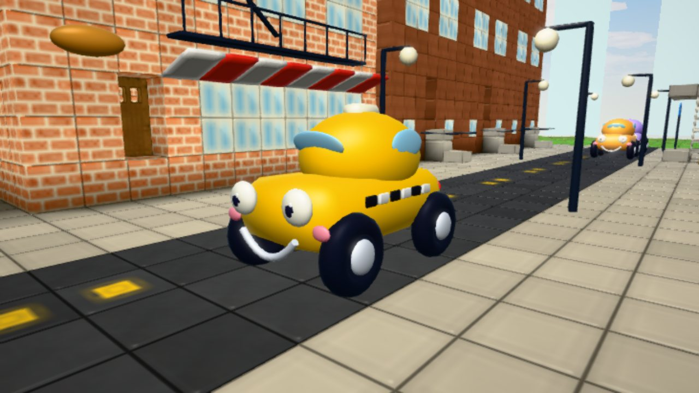
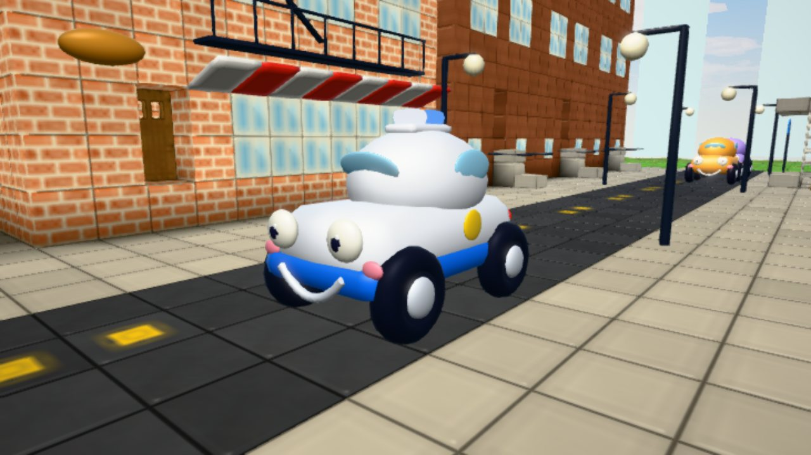
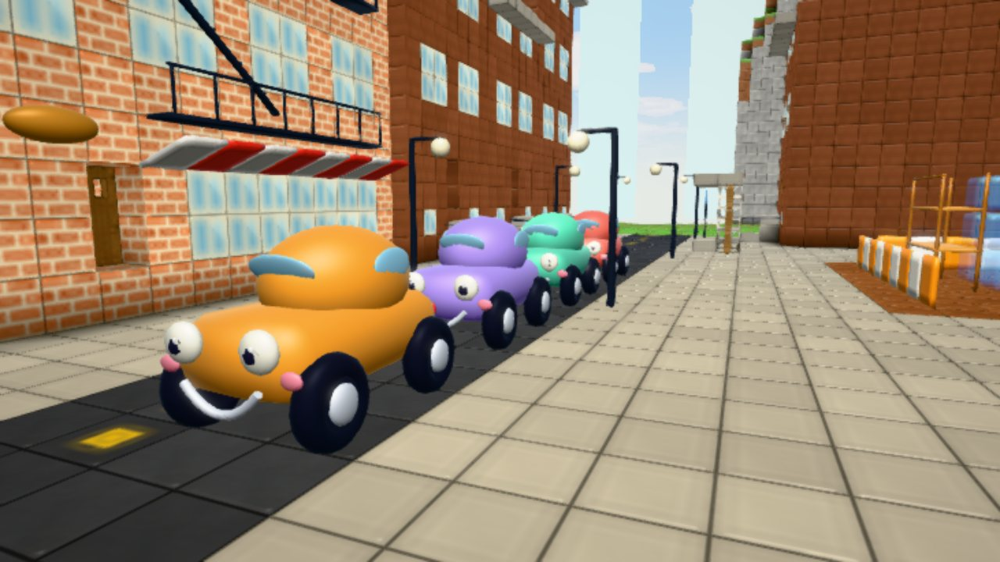
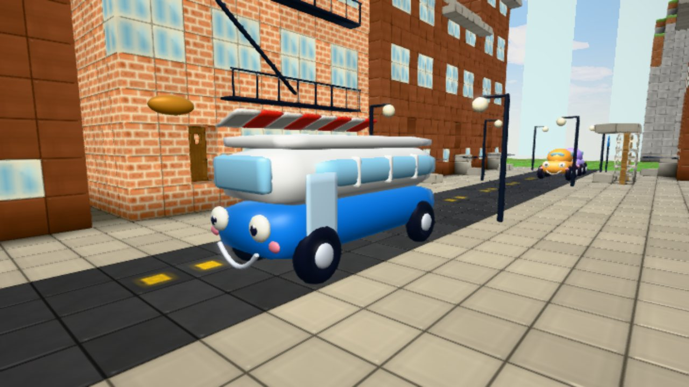
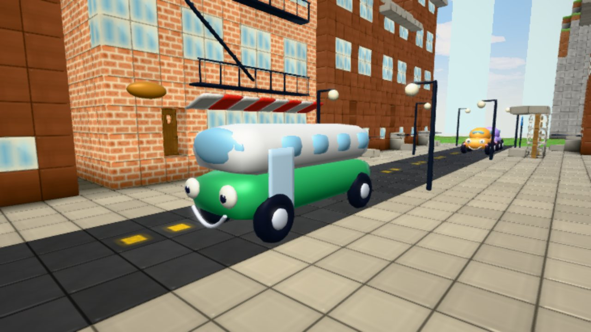
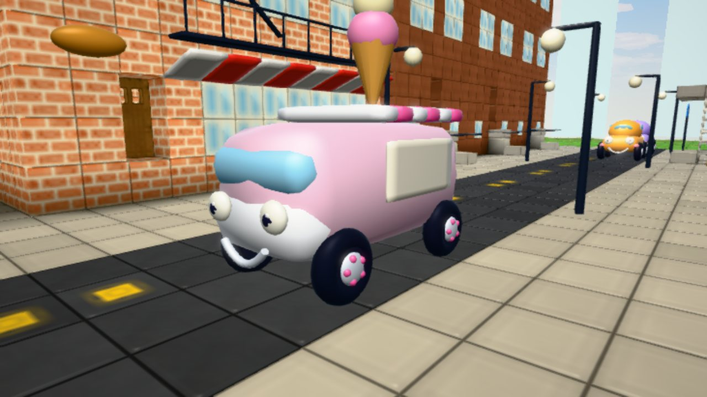
A frota na avenida do parque
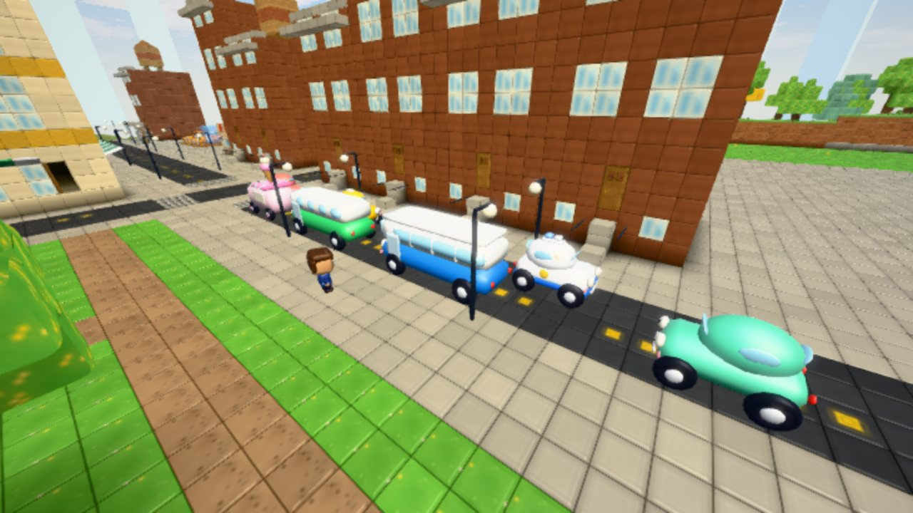
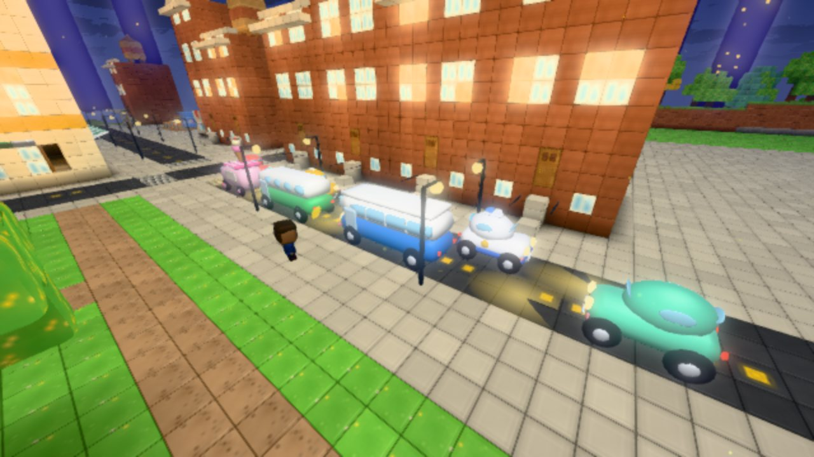
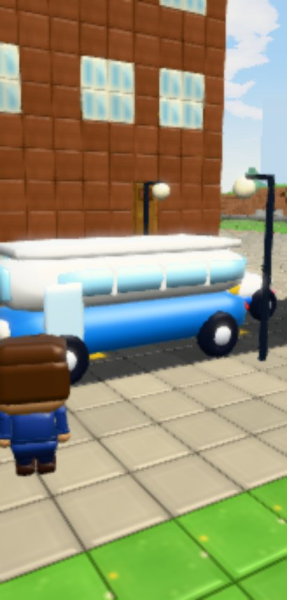
Só nas pistas (regra do dono)
- Os veículos andam só nas pistas: nunca na calçada, na praça, no parque, no gramado ou no canto da faixa de pedestre, e nunca cortando a esquina por cima do meio-fio.
- As rotas saem do grafo de pistas do planejador: o centro da faixa, com curvas em arco dentro do asfalto. A caixa do veículo fica sempre dentro da faixa.
- Nada empurra um veículo para fora do caminho; ele só para e espera.
- O carrinho de sorvete para numa vaga pintada na rua, na beira da praça. Nunca entra na praça.
- Se encalhar, some e volta no começo de uma faixa, fora da vista. Ninguém constrói nas pistas (elas são passagem, regra da 016).
- Um teste confere cada ponto do caminho e cada roda, numa volta inteira de cada rota; outro, um minuto de veículos andando no jogo.
A mecânica
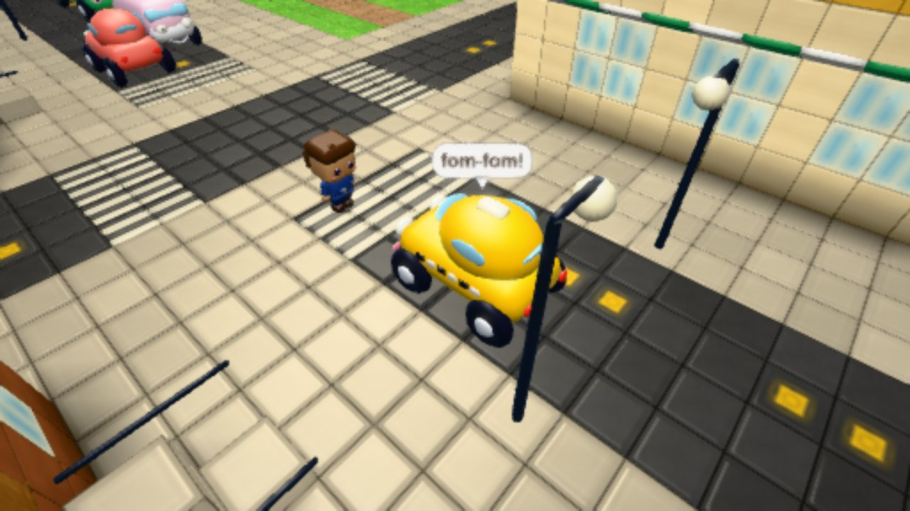
O balanço de parar
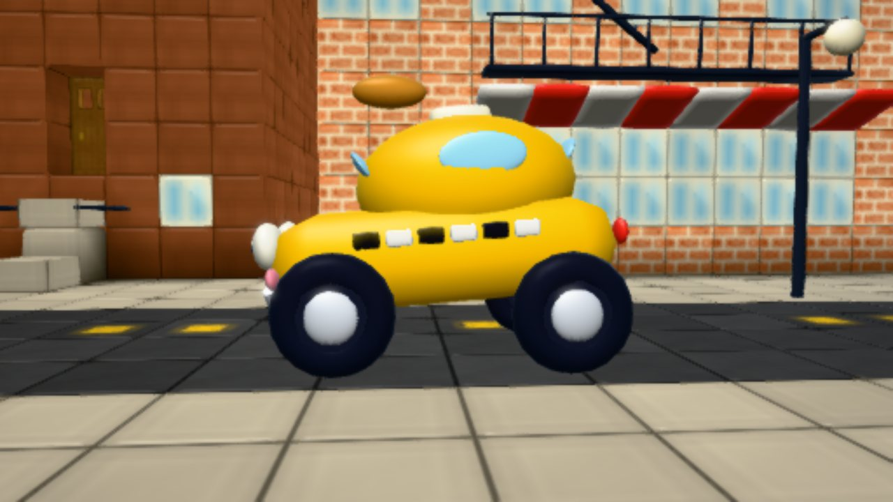
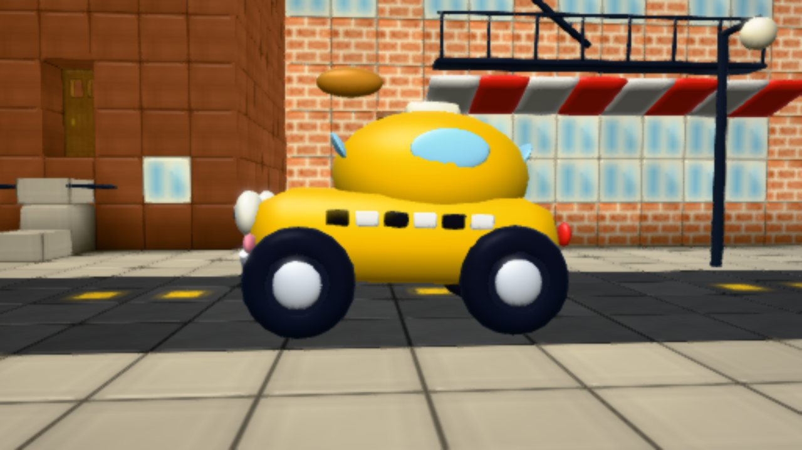
O ônibus no ponto
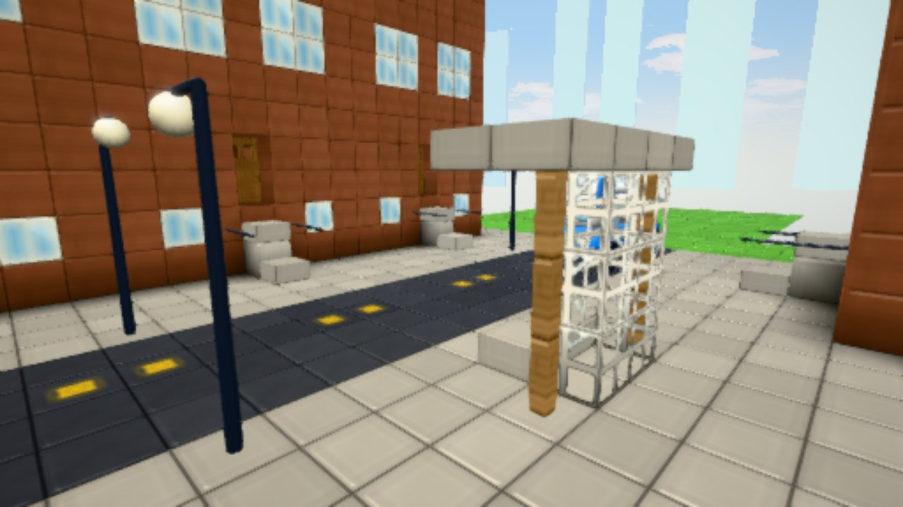
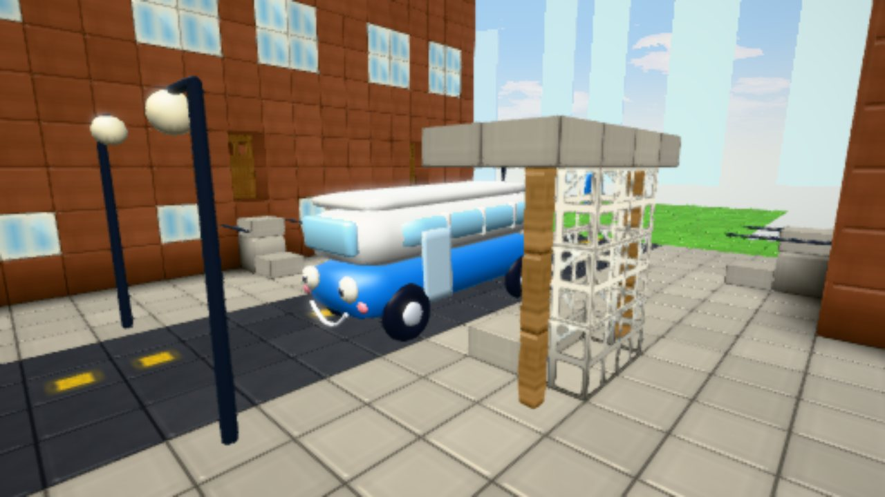
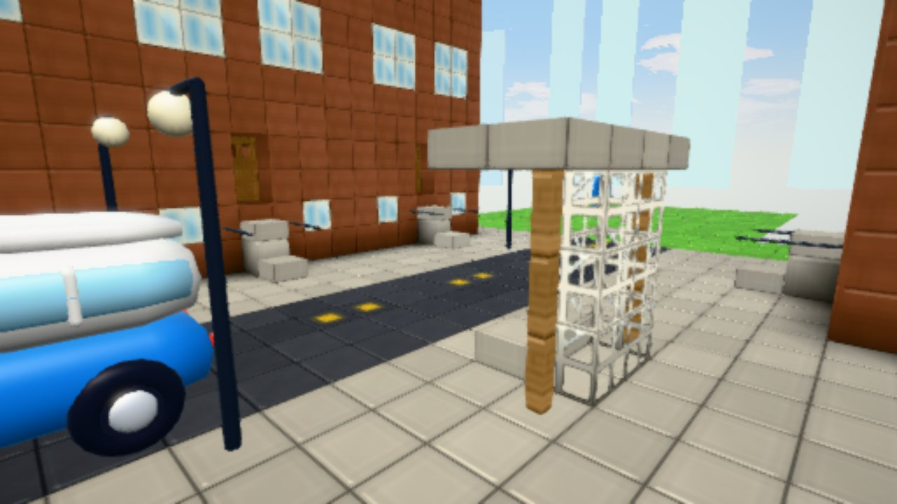
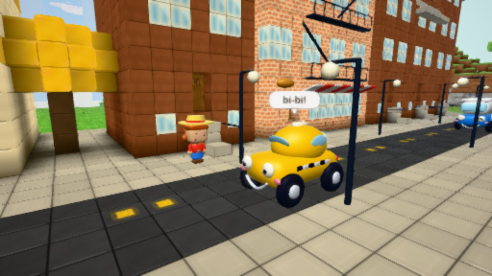
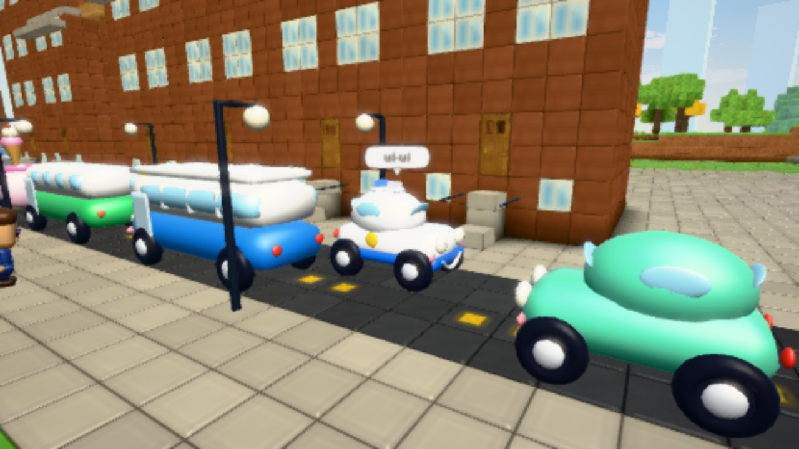
- Criança parada na frente: o carro espera o tempo que for, buzina de leve no máximo a cada 6 s. Nunca empurra, nunca machuca.
- Criança em cima: o veículo é sólido como um bloco e não anda com alguém em cima. Ninguém é carregado.
- De noite: olhinhos acesos com poça de luz no asfalto (um desenho no chão, não uma luz de verdade), lanternas vermelhas, giroflex da polícia.
Os sons
Os motores agora saem de gravações de verdade (livres, CC0): a marcha lenta de um carro a gasolina, um diesel para o ônibus e uma van para o sorvete. O jogo lê a gravação mais depressa quando o motor gira mais, seguindo uma curva de rotação: arranca, troca de marcha (a rotação cai e volta a subir), roda, solta o pedal, reduz e para. Acelerando fica mais forte e mais claro; soltando o pedal, mais abafado. Sem tique-tique de corda.
Carro (táxi e carros comuns)
Polícia
Ônibus
Carrinho de sorvete
A rua inteira
| Som | Volume | Notas |
|---|---|---|
| Motores perto (arrancando, rodando) | -27 dB (ônibus -26) a 2 blocos | somem com a distância (zero a 16 blocos); no máximo os 3 mais perto |
| Marcha lenta | -31 dB (ônibus -29) | laço de 3 s |
| "Uí-uí" da polícia | -26 dB | uma vez por passagem pela praça |
| Musiquinha do sorvete | -30 dBFS | só parado na praça ou chegando devagar; abaixo da trilha |
| A rua com veículos (15 s) | -24,0 LUFS | só a trilha, do mesmo jeito: -24,4 LUFS (os veículos sobem 0,4) |
| Sorvete chegando com a trilha (24 s) | -25,2 LUFS | a trilha sozinha: -26,0 LUFS |
Custo no celular: no máximo 3 motores, 1 buzina por veículo com espera e a musiquinha do sorvete, dentro do teto de 8 vozes gravadas da 019. Os laços de motor somam uns 70 KB no pacote de vozes da cidade.
| Gravação usada | Acervo e autor | Licença | Usada em |
|---|---|---|---|
| Car (Arrival, Stop, Departure), Citroën Saxo 1.1 em marcha lenta | BigSoundBank, Joseph Sardin | CC0 | motor do carro e da polícia |
| Truck engine, diesel Iveco Daily 3.0 | BigSoundBank, Joseph Sardin | CC0 | motor do ônibus |
| Pneumatic brake released | BigSoundBank, Joseph Sardin | CC0 | freio a ar do ônibus |
| Ford Courier Engine | BigSoundBank, Joseph Sardin | CC0 | motor do sorvete |
| Musiquinha do sorvete: partitura nossa; caixinha de música, celesta e cordas beliscadas do FluidR3_GM | Frank Wen e colaboradores | MIT | musiquinha |
| "Uí-uí", curva de rotação, trocas de marcha, passagem com quase-Doppler | síntese e processamento nossos | nossa | todos os veículos |
| Trilha da cidade e pombo (da página da cidade) | FluidR3_GM (MIT) e "Dove cooing" (domínio público) | MIT e domínio público | misturas |
Quanto cada um pesa
| Modelo | Esboço (medido no motor) | No jogo (meta) |
|---|---|---|
| Carro (táxi, polícia e comum são o mesmo modelo; a polícia tem giroflex e faixa) | Carro até 3.500 triângulos; ônibus e sorvete até 4.500. 3 chamadas de desenho por modelo para todos os veículos daquele modelo (carroceria fundida com a cor nos vértices, como a tinta das fantasias da 017; rodas em instâncias; faróis à parte). A cor do carro comum é só tinta: nenhum custo a mais. A frota de 8 veículos: até uns 30 mil triângulos e 12 chamadas na cena; longe, versão simples de uns 400 triângulos. | |
| Ônibus azul | ||
| Ônibus verde | ||
| Carrinho de sorvete |
Perguntas
- O "uí-uí" da polícia, uma vez ao passar pela praça, pode? Ou só o giroflex piscando, sem som nenhum?
- A polícia branca e azul está boa, ou prefere preta e branca?
- As quatro cores do carro comum (coral, verde-água, lilás, laranja) estão boas?
- Os dois ônibus rodam juntos (azul numa volta, verde na outra), ou fica só um?
- O motor de verdade ficou no ponto? Está alto, baixo ou certo perto da trilha?
- A musiquinha do sorvete agrada? Toca inteira uma vez ao chegar e depois só de vez em quando?
Rodada 1
Na primeira rodada foram quatro jeitos (brinquedo de corda, bloquinhos, com carinha e vinil retrô), com motor de zumbido sintetizado. O dono escolheu a versão 3 ("com carinha"), pediu para tirar a chave de corda e o tique-tique, e pediu motor com som de carro de verdade.


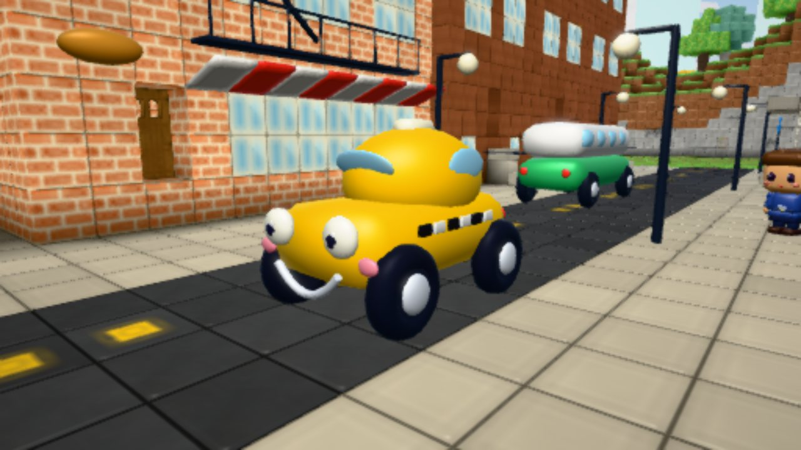
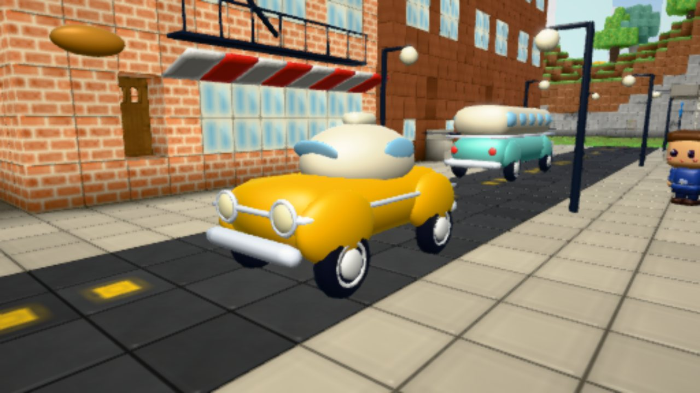